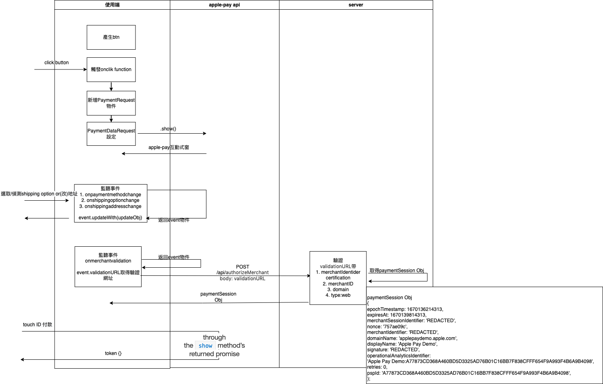
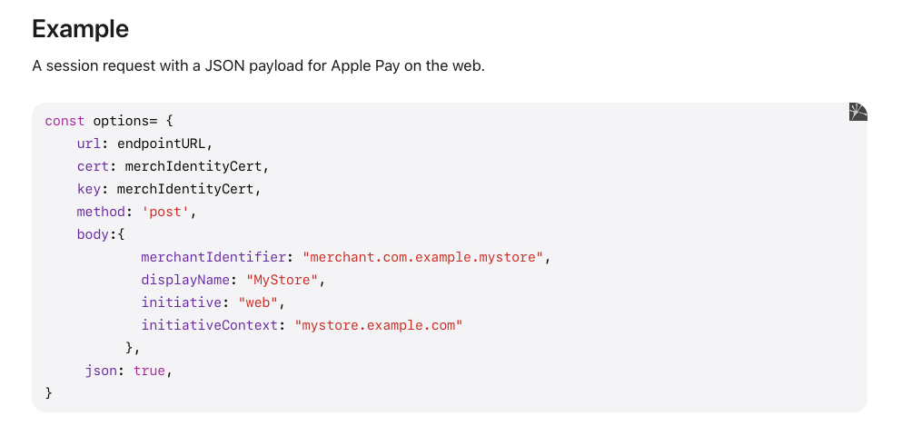

前言 前端使用 Javascript
注意：
這篇文章是紀錄實作 Apple pay on web，且沒有透過第三方金流平台串接。
apple pay 按鈕
使用者付費
解析 token
apple pay on web 只有 Safari 瀏覽器可以使用
apple pay 有兩種 API
Apple Pay JS API (apple pay 原生的 API)
(我用的) Payment Request API(遵照 W3C 準則而出的 API)
＊如果有和第三方金流平台配合例如：Tappay，他們的平台有簡化步驟，幫助大家更快速簡單串接 apple pay, google pay 等等的支付方式。他們也提供很完整的文件解說
即使我沒有使用第三方金流平台，他們的操作步驟還是有很多可以參考的地方。
在正文開始之前需要先準備好以下：（這邊操作可以參考 Tappay 文件，這邊就不會再紀錄）
註冊 Apple ID
APPLE ID 加入 Developer Program（要付費)
有了 Developer Program 之後
申請 Merchant ID
申請 Payment Processing Certificate：解密時會使用到！
申請 Merchant identity Certificate：自己 Server 和 Apple Pay Server 認證時會用到！官方文件
準備好 Https 環境。檢查：
Https 環境
TLS 版本在 1.2 或以上
你網站的 Cipher suites 有包含在 apple 官方文件裡面官方文件 可以檢查環境的網站
正文 流程 
.csr 到.cer 憑證的過程
Payment Processing Certificate
Merchant identity Certificate
都是以下流程從.csr 到.cer
自己生成.csr 檔案及 Private Key.key
Private Key 自己保留好。
.csr 上傳到 Apple Pay 平台取得 .cer 憑證
＊如果用 Tappay，會直接從 Tappay 平台取得他們生成的.csr。
.csr 是憑證簽署要求(Certificate Signing Request)
Merchant identity Certificate 生成.csr & private key.keyopenssl req -new -newkey rsa:2048 -nodes -keyout applepay.key -out applepay.csr -subj '/O=Subscribe Pro/C=US'
有用的參考 Create Merchant Identity Certificate in Apple Developer Account
Payment Processing Certificate 生成.csr & private key.keyopenssl ecparam -out server.key -name prime256v1 -genkeopenssl req -new -key server.key -out server.csr -sha256有效參考 Apache: Create ECC CSR and Install ECC SSL Certificate
Apple Pay 按鈕 這邊有前端完整的 code 可以參考/實際操作/也有講解。可以自己玩玩。官方 Demo 參考：用 Safari 實際操作
畫面會是這樣
Apple Pay 付款認證階段 Server 驗證 Apple Pay Server 相關文件比較少，我在認證這邊卡了不少時間。onvalidatemerchant事件返回的 event.validationURL 要傳到後端，由後端打 POST 到這個 validationURL 連帶 Payload 一起過去驗證。官方文件
卡關部分：
Payload 部分我覺得範例寫的不是很清楚
然後我是使用 Axios，傳 Payload 方式不同
傳憑證的部分不知道怎麼傳
一開始不清楚上面的 Key 是什麼？

解決：
取得的.cer 憑證要轉成.pem 檔案，將.pem 放入 payload 傳送給 apple pay server
openssl x509 -inform der -in certificate.cer -out certificate.pem
key 是產生.csr 也一起產生的 private key.key，因為.cer 裡面的資訊會包含 public key，所以提供 private key 來驗證你是這個 certificate 的 owner
如果使用 Axios 的話就會是長這樣
1 2 3 4 5 6 7 8 9 10 11 12 13 14 15 16 17 18 19 20 21 22 23 24 25 26 27 28 29 30 const merchIdentityCert = fs.readFileSync( path.join(__dirname, '../' , 'merchant_id.pem' ), 'utf-8' ); const private_key = fs.readFileSync( path.join(__dirname, '../' , 'applepay.key' ), 'utf-8' ); const payload = { merchantIdentifier : 'merchant.com.xx.xx' , displayName : 'example Ltd' , initiative : 'web' , initiativeContext : 'example.com' , }; const httpsAgent = new https.Agent({ rejectUnauthorized : false , cert : merchIdentityCert, key : private_key, }); const rs = await axios({ url : authorizeUrl, headers : { Accept : 'application/json' , 'Content-Type' : 'application/txt;charset=UTF-8' , }, httpsAgent, method : 'post' , data : JSON .stringify(payload), });
解決了以上的問題！
1 2 3 4 5 6 7 8 9 10 11 12 13 14 { epochTimestamp: 1670136214313, expiresAt: 1670139814313, merchantSessionIdentifier: 'REDACTED', nonce: '757ae09c', merchantIdentifier: 'REDACTED', domainName: 'applepaydemo.apple.com', displayName: 'Apple Pay Demo', signature: 'REDACTED', operationalAnalyticsIdentifier: 'Apple Pay Demo:A77873CD368A460BD5D3325AD76B01C16BB7F838CFFF654F9A993F4B6A9B4098', retries: 0, pspId: 'A77873CD368A460BD5D3325AD76B01C16BB7F838CFFF654F9A993F4B6A9B4098', };
Touch ID 付款 使用者 Touch ID 付款結果會透過.show()返回 promise 結果，也就是 Token
1 2 3 4 5 6 7 8 9 10 11 12 13 14 15 16 17 18 Payment Token: { "paymentData": { "version": "EC_v1", "data": "TQf1foe8j/aDJZAMO/9z0q1Ixslykn0isD5ky/jS4OHgDBByMSfbUxUZIJ0+HjUpftl1biXgBbAQ42sZwjZh2UXc7qhZLbvVZ94DthODEQMtsgS3Jd70aB86cdmf390jRdxP08oeXgY0hqG4h16CZ8r542Rs6viVu5ViSTbP42qcfRapsm09mVSOD65/VJTDkSToHCZVmkK/xpnc9Gn+1CwMXjFXcyXAQFUNhM48ldDSUHDbvFyZ/Ip7A8hJnvV0ZodRtDqNTehYO/Z2zcC0oGrmW9u/CRoYKTuh5p4H61VdejPenruyNulkw3BWqVnCFzdR9/ZQ9jlg5zY486GabpUwMc/TtR9Xdq2hz4FoIcT9FxNqxJ0dXGb9F9yGgfU2qarlVSyJsoPSQ0PC54pmstG/RaLnhYRvrXxzyireib0=", "signature": "MIAGCSqGSIb3DQEHAqCAMIACAQExDzANBglghkgBZQMEAgEFADCABgkqhkiG9w0BBwEAAKCAMIID4zCCA4igAwIBAgIITDBBSVGdVDYwCgYIKoZIzj0EAwIwejEuMCwGA1UEAwwlQXBwbGUgQXBwbGljYXRpb24gSW50ZWdyYXRpb24gQ0EgLSBHMzEmMCQGA1UECwwdQXBwbGUgQ2VydGlmaWNhdGlvbiBBdXRob3JpdHkxEzARBgNVBAoMCkFwcGxlIEluYy4xCzAJBgNVBAYTAlVTMB4XDTE5MDUxODAxMzI1N1oXDTI0MDUxNjAxMzI1N1owXzElMCMGA1UEAwwcZWNjLXNtcC1icm9rZXItc2lnbl9VQzQtUFJPRDEUMBIGA1UECwwLaU9TIFN5c3RlbXMxEzARBgNVBAoMCkFwcGxlIEluYy4xCzAJBgNVBAYTAlVTMFkwEwYHKoZIzj0CAQYIKoZIzj0DAQcDQgAEwhV37evWx7Ihj2jdcJChIY3HsL1vLCg9hGCV2Ur0pUEbg0IO2BHzQH6DMx8cVMP36zIg1rrV1O/0komJPnwPE6OCAhEwggINMAwGA1UdEwEB/wQCMAAwHwYDVR0jBBgwFoAUI/JJxE+T5O8n5sT2KGw/orv9LkswRQYIKwYBBQUHAQEEOTA3MDUGCCsGAQUFBzABhilodHRwOi8vb2NzcC5hcHBsZS5jb20vb2NzcDA0LWFwcGxlYWljYTMwMjCCAR0GA1UdIASCARQwggEQMIIBDAYJKoZIhvdjZAUBMIH+MIHDBggrBgEFBQcCAjCBtgyBs1JlbGlhbmNlIG9uIHRoaXMgY2VydGlmaWNhdGUgYnkgYW55IHBhcnR5IGFzc3VtZXMgYWNjZXB0YW5jZSBvZiB0aGUgdGhlbiBhcHBsaWNhYmxlIHN0YW5kYXJkIHRlcm1zIGFuZCBjb25kaXRpb25zIG9mIHVzZSwgY2VydGlmaWNhdGUgcG9saWN5IGFuZCBjZXJ0aWZpY2F0aW9uIHByYWN0aWNlIHN0YXRlbWVudHMuMDYGCCsGAQUFBwIBFipodHRwOi8vd3d3LmFwcGxlLmNvbS9jZXJ0aWZpY2F0ZWF1dGhvcml0eS8wNAYDVR0fBC0wKzApoCegJYYjaHR0cDovL2NybC5hcHBsZS5jb20vYXBwbGVhaWNhMy5jcmwwHQYDVR0OBBYEFJRX22/VdIGGiYl2L35XhQfnm1gkMA4GA1UdDwEB/wQEAwIHgDAPBgkqhkiG92NkBh0EAgUAMAoGCCqGSM49BAMCA0kAMEYCIQC+CVcf5x4ec1tV5a+stMcv60RfMBhSIsclEAK2Hr1vVQIhANGLNQpd1t1usXRgNbEess6Hz6Pmr2y9g4CJDcgs3apjMIIC7jCCAnWgAwIBAgIISW0vvzqY2pcwCgYIKoZIzj0EAwIwZzEbMBkGA1UEAwwSQXBwbGUgUm9vdCBDQSAtIEczMSYwJAYDVQQLDB1BcHBsZSBDZXJ0aWZpY2F0aW9uIEF1dGhvcml0eTETMBEGA1UECgwKQXBwbGUgSW5jLjELMAkGA1UEBhMCVVMwHhcNMTQwNTA2MjM0NjMwWhcNMjkwNTA2MjM0NjMwWjB6MS4wLAYDVQQDDCVBcHBsZSBBcHBsaWNhdGlvbiBJbnRlZ3JhdGlvbiBDQSAtIEczMSYwJAYDVQQLDB1BcHBsZSBDZXJ0aWZpY2F0aW9uIEF1dGhvcml0eTETMBEGA1UECgwKQXBwbGUgSW5jLjELMAkGA1UEBhMCVVMwWTATBgcqhkjOPQIBBggqhkjOPQMBBwNCAATwFxGEGddkhdUaXiWBB3bogKLv3nuuTeCN/EuT4TNW1WZbNa4i0Jd2DSJOe7oI/XYXzojLdrtmcL7I6CmE/1RFo4H3MIH0MEYGCCsGAQUFBwEBBDowODA2BggrBgEFBQcwAYYqaHR0cDovL29jc3AuYXBwbGUuY29tL29jc3AwNC1hcHBsZXJvb3RjYWczMB0GA1UdDgQWBBQj8knET5Pk7yfmxPYobD+iu/0uSzAPBgNVHRMBAf8EBTADAQH/MB8GA1UdIwQYMBaAFLuw3qFYM4iapIqZ3r6966/ayySrMDcGA1UdHwQwMC4wLKAqoCiGJmh0dHA6Ly9jcmwuYXBwbGUuY29tL2FwcGxlcm9vdGNhZzMuY3JsMA4GA1UdDwEB/wQEAwIBBjAQBgoqhkiG92NkBgIOBAIFADAKBggqhkjOPQQDAgNnADBkAjA6z3KDURaZsYb7NcNWymK/9Bft2Q91TaKOvvGcgV5Ct4n4mPebWZ+Y1UENj53pwv4CMDIt1UQhsKMFd2xd8zg7kGf9F3wsIW2WT8ZyaYISb1T4en0bmcubCYkhYQaZDwmSHQAAMYIBizCCAYcCAQEwgYYwejEuMCwGA1UEAwwlQXBwbGUgQXBwbGljYXRpb24gSW50ZWdyYXRpb24gQ0EgLSBHMzEmMCQGA1UECwwdQXBwbGUgQ2VydGlmaWNhdGlvbiBBdXRob3JpdHkxEzARBgNVBAoMCkFwcGxlIEluYy4xCzAJBgNVBAYTAlVTAghMMEFJUZ1UNjANBglghkgBZQMEAgEFAKCBlTAYBgkqhkiG9w0BCQMxCwYJKoZIhvcNAQcBMBwGCSqGSIb3DQEJBTEPFw0yMjEyMDQwNjQ5MTJaMCoGCSqGSIb3DQEJNDEdMBswDQYJYIZIAWUDBAIBBQChCgYIKoZIzj0EAwIwLwYJKoZIhvcNAQkEMSIEIHfRTal5qyLxEeQrq3TY05/Ht6tN8FaMFerU5ufKhvbSMAoGCCqGSM49BAMCBEYwRAIgF+ReScKgs0YEjWJ+eIIifRz0lTFAVzUtRVp97yuRgpMCIH0lORgBIUV+CSplRcsTKg5P3kjg7JN/9oPyaxiH5v0zAAAAAAAA", "header": { "ephemeralPublicKey": "MFkwEwYHKoZIzj0CAQYIKoZIzj0DAQcDQgAE9MQf5OWHgrinv0m9LAc4CoKckDkcDN37cp3k4TX5pArfMeVXzrzHSzdvppsKgdQEgpe/9qXQ9M0lJ1A8VpnpYg==", "publicKeyHash": "DUk3mLvfQgqZFWz9r45AsSC7Ew7mcDnbyChqPVfSG3c=", "transactionId": "97daac01e31dcb2373191b34532ebd0f7fef29797cbc2c9526fbf4aff3ca5625" } }, "paymentMethod": { "displayName": "Visa xxxx", "network": "Visa", "type": "credit" }, "transactionIdentifier": "97DAAC01E31DCB2373191B34532EBD0F7FEF29797CBC2C9526FBF4AFF3CA5625" }
解密相關 以上取得的 Token 就是付款的加密資料，Apple Pay 也有提供解密的方式
解密步驟像文章提到的
1 2 3 4 5 6 7 1. Verify the signature 2. Determine which merchant public key was used 3. Restore the symmetric key 4. Use the symmetric key to decrypt the value of the data key 5. Confirm that this payment has not yet been credited 6. Verify the transaction details: currencyCode, transactionAmount, and applicationData 7. Use the decrypted payment data to process the payment
官方解密步驟說明 參考：輕鬆解密 Apple pay payment token
如果自己解密以我的功力只能說會耗費非常之久，套件相關
有清楚寫下使用方法
1 2 3 4 5 6 7 8 9 10 11 12 13 14 15 16 17 18 19 20 21 22 23 24 25 26 27 28 29 30 31 32 const requestToken = { data : '<encryptedData>' , version : 'EC_v1' , signature : '<signature>' , header : { ephemeralPublicKey : '<ephemeralPublicKey>' , publicKeyHash : '<publicKeyHash>' , transactionId : '<transactionId>' , }, }; const publicCert = fs.readFileSync( path.join(__dirname, './publicCert.pem' ), 'utf8' ); const privateKey = fs.readFileSync( path.join(__dirname, './privateKey.pem' ), 'utf8' ); const token = new applePayPaymentToken(requestToken);const decryptedToken = token.decrypt(publicCert, privateKey);decryptedToken .then((ret ) => { console .log(ret); }) .catch((err ) => { console .error(err); });
Issue 下載套件時，發現開發者使用的其中一個套件已經沒有再維護了，所以下載會失敗。
解決 於是我先把這個 repo 拉下來，試圖解除裡面的 bug。
發現fix:node-webcrypto-ossl套件不再使用，我改成@peculiar/webcrypto套件
載入方法也從const crypto = new Crypto.Crypto()const crypto = new Crypto()
原本裡面的 AppleRootCA-G3.cer 可以沿用，如果過期可以自行到APPLE PKI 下載 AppleRootCA-G3.cer，一樣要附在程式，因為這個解密會需要去開啟 AppleRootCA-G3.cer 做 signature 驗證
心得 一切都還只是在串接階段、測試環境，希望之後到正式環境階段沒差別。
自己研究的 Code 還是放在這裡。
資料來源：Apple Pay on Web + Cybersource 串接筆記
关于 Apple Pay 接入和开发
Author:
Chi Lin
Permalink:
https://chiderlin.github.io/2022/12/17/apple-pay/
License:
Copyright (c) 2019 CC-BY-NC-4.0 LICENSE
Slogan:
Do you believe in DESTINY ?